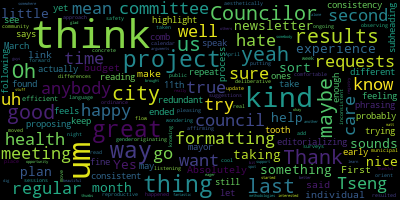
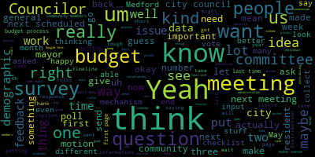

[Kevin Harrington]: Mic check one, two, mic check one, two, check microphone one, two.
[Leming]: Okay. Meeting of the Resident Services and Public Engagement Committee meeting. Mr. Clerk, when you're ready, will you please call the roll?
[Hurtubise]: Councilor Callahan? Present. Councilor Lazzaro? Present. Councilor Scarpelli is going to be absent tonight. Councilor Tseng is going to be late. Chair Leming?
[Leming]: Thank you. There's Councilor Tseng told me that he's stuck in traffic. So the first thing that will be working on tonight is the draft of the Medford City Council newsletter for the month of April. For the sake of editing, I'm just going to hold on a minute. I'm just going to share my screen real quickly. Okay, I just got a new computer, so there does seem to be a bit of an issue with the sharing at the moment. Sorry, just opening settings. One moment, I'm just gonna have to quit and reopen Zoom. Again, new computer, so I'm just trying to share my screen. All right, going back into Zoom. All right, here's to be good. All right, perfect. Okay. All right, so we have a version of the Medford City Council newsletter, which was passed, which was created by Councilor Callaghan. I'm seeing this paragraph here saying it was our first newsletter. So, oh wait, no, sorry, this is April 2024. No, sorry, this was the, my apologies, I had the April 2024, this is the March 2025 version open. bad window. Okay. Okie dokie. So I'm also just going to, for this one, I'm just going to note here that we need to put in the note about the underlying words being So yeah, we included, last time I know it, about the underlying words being linked to the previous newsletter. Got some, I believe Councilor Lazzaro had some notes from Councilor Tseng, who's running a little, who's stuck in traffic at the moment, saying he had some edits to the current draft of the newsletter. If you'd like to share those really quickly, and I could just do the edits here.
[Lazzaro]: Absolutely. I'm happy to do that. First thing he said is to make sure we link the city council's budget requests and individual Councilor requests. I think my editorializing on that is probably we would want to highlight the ones that we ended up proposing to the mayor. His second thing is, actually, do you want to take a second to do that, or should I go through all of them?
[Leming]: I usually provide the hyperlinks during when I'm actually formatting. I'm not sure if he meant from the note that he just wanted us to provide hyperlinks to those documents, or if he wanted us to actually outline what individual, oh, he just, Councilor Tseng is here now.
[Lazzaro]: Oh, great. I'll let Councilor Tseng go for it.
[Leming]: Hello, we were, Councilor Tseng, we were just talking about one of your notes to link to individual councillor requests for this. Did you mean just throw in hyperlinks during formatting or actually out?
[Tseng]: Yeah, that's all I meant.
[Leming]: Okay, all right. Well, I usually do that during the, I usually just do that during the formatting process.
[Tseng]: Wonderful.
[Leming]: Make a quick explanation of what the Salem Street Corridor District in the green score is. Okie dokie. So, the Salem Street Corridor District in the city's green score coordinates. Maybe something like... Does that seem like a sufficient? Thank you. Thank you. And since we're talking about budget, okay. Yep. And then for budget outreach at the discussions included to do.
[Unidentified]: want to do.
[Leming]: One thing I also am wondering, so this is a slightly different formatting. Normally we would have like on March 4th and March 11th, blah, blah, blah happened, although the dates are noted here. So this is a little bit briefer, which is nice, but I'm wondering if the consistency of the format matters to anybody but me, Councilor Lazzaro.
[Lazzaro]: I don't hate this formatting. I found the other formatting, I mean, for consistency, I think we were all well, I'll speak for myself, I was just trying to keep it consistent. But it was feeling redundant to have to repeat that phrasing the same way. I also kind of like that. You know, it was, you know, regular city council meetings and it says March 11th as like a subheading. I kind of like that. I mean, I, I, I don't think anybody is too, um, is, is following our. Maybe this isn't true, but I'm not sure that there's anybody that's reading our newsletters with a fine tooth comb yet. Um, and, uh, we may still be early enough in the process that we can try a few different things, um, and see which feels like the most efficient. and aesthetically pleasing. So I don't hate this.
[Leming]: Councilor Callahan.
[Callahan]: I concur. I don't think we have to worry too much about consistency between them with something with a change as small as this.
[Leming]: All right. Sounds good to me. Cool. And then looking ahead in April, we'll bring more budget hearings, zoning proposals and resident engagement initiatives and encourage more residents. Okay. Cool. Any other comments?
[Tseng]: Did we go through the rest of what I had sent you?
[Leming]: I thought it was only the three comments, but, oh, right. Sorry, I was going through the numbered list, but then they stopped being numbered after a while. No, no worries. I'm sorry. Okey dokey. Yeah, the other one is the money for the lead pipes as well. Do you remember which meeting that was at?
[Tseng]: Lead pipes was, we made that final vote at the March 25th meeting.
[Unidentified]: Okay.
[Tseng]: I know there's some language in old newsletter that we probably pull from as well. Let me just quickly get that for you.
[Hurtubise]: Yeah, I am.
[Tseng]: I am remembering that we previously, but it's like a two vote thing, like preliminary approval, like first reading and then the final vote.
[Hurtubise]: Okay.
[Tseng]: And alongside that, we also passed some free cash to fix for a water main project that is also lead related.
[Callahan]: Oh, yeah.
[Tseng]: Yeah.
[Callahan]: That was like the one that we pulled in from Unfinished Business.
[Hurtubise]: Was it? I think it might have just been a free cash paper. And the main, the third reading is Unfinished Business. Oh.
[Leming]: I can pull that up too. I actually did get a note about the last newsletter. The reason it's on my mind is because somebody sent a note about the fact that it was phrased as repair and not repair slash replace. And I was just kind of thinking like, OK, well, this phrasing does make sense. So thanks for remembering. Got it. So that's like celebrity repair statements, insurance, Oh, Councilor Lazzaro.
[Lazzaro]: Thanks. I am wondering, last time we did this, we did update on things that had happened like that week. We just moved the gender affirming care and reproductive health care ordinance out of committee to the regular meeting last night. So we could add something about that from public health and community safety.
[Leming]: All right. So, okay. Yeah, we need to include but that was the 1st of April.
[Lazzaro]: I don't think oh, that's true. That was April. Um, but yeah, but we kind of have been doing this calendar month.
[Leming]: So what I've been doing for this is okay. The months aren't perfect. My my rule of thumb is just to cover every event that we've had since the last newsletter. So up to you. I also generally fuse committee of the whole with the regular meetings, but whichever. Councilor, Councilor Lazzaro, would you, are you on the document right now?
[Lazzaro]: Yes.
[Leming]: Could you feel free to feel free to write out the language for that since you're the chair of the committee and driver behind the ordinance, I figure you'd probably.
[Unidentified]: uh...
[Leming]: This is probably the most informal committee of all. This is probably the most informal committee of all the city council meetings. Y'all are just like eating bagels and just kind of palling around over there. This is a serious chamber with serious stuff going on. Y'all gotta be more serious. You're eating blackberries?
[Unidentified]: What?
[Leming]: Okay, well. All right, Councilor Lazzaro, are you good with that?
[Lazzaro]: Yeah, I'm comfortable with that if that's cool with you.
[Leming]: Okay. Councilor Tseng? President Bears?, you have the document on your computer, or do you want me to just like scroll through on this screen if you don't?
[Hurtubise]: It's this, this is for the next item.
[Leming]: No, I'm just wondering if like you, if you have a, if you're on the document or if you have a link.
[Tseng]: Oh, I'm not on the document, but this is okay. It's fine.
[Leming]: No, I think, I think we got, we got everything from your notes.
[Hurtubise]: I think you have everything as well.
[Tseng]: Thank you. Thank you all for, for, for putting this together and for doing that. It's.
[Leming]: I will say that during some of the formatting like this whole like bullet and sub bullet points could end up showing up weird on the latex when I'm doing two columns. So do whatever formatting. Okay. Okay. Well I'll just, I'll just change that really some. Okay, that's actually Discussions.
[Callahan]: Just one quick question. Yep. Sometimes we say the council or council and sometimes we say we. That's probably fine.
[Leming]: we could either be... Sorry, can you speak up?
[Callahan]: Yeah, sure. So if you look under March 25th, we say council submitted, and later we say the council received, and then later we say we approved and we passed. Should we make it a little bit more consistent and either say the council or we?
[Lazzaro]: Or is it nice to have the language be a little inconsistent for the flow? of it, the differences can be kind of nice to read that way.
[Leming]: I think we should hold a roll call vote on this important issue.
[Callahan]: I am happy either way. That's what I'd ask.
[Leming]: Okay. Again, we can make this a midnight meeting. We can do that if we really need to. Okay. You know, nevermind, I'll just keep it this way. Okay, does anybody else have any other additional edits they'd like to see? Do we have a motion to approve?
[Callahan]: Motion to approve. Second.
[Leming]: Mr. Clerk, when you're ready, please call the roll.
[Hurtubise]: motion to approve. Councilor Callahan? Councilor Lazzaro?
[Lazzaro]: Yes.
[Hurtubise]: Councilor Scarpelli is absent. Councilor Tseng? Yes. Chair Leming? Yes.
[Leming]: On the affirmative, one absent. The newsletter is approved. I'll be working on the formatting of this as soon as I can. Next item. So we had on here a resolution to discuss the modernization of the Human Rights Commission's enabling ordinance. This year was put on the agenda largely as a uh, preliminary measure in case, uh, Councilor Tseng, uh, had, uh, concluded his discussions with the mayor on this topic. Um, but it my understanding is that we probably need to wait another month before we could really move forward on this.
[Tseng]: Thank you. Um, we the mayor and I had a productive conversation yesterday. We mostly worked through most for the most part, works through smaller technical edits, there are one or two. bigger picture items that she wants us to reconsider, such as providing stipends to boards and commissions in general, as a policy. And to this one in particular, with certain circumstances around them, but I asked the mayor to put give us something in writing for Councilors to consider because it seemed to be more complex conversation there. And I know, in the past, our Councilors, both on the city council, but the city council in general, historically has been supportive of stipends for people who are serving on boards and commissions, or taking that time out of their day, maybe hiring babysitters. So I know that's an important issue to us. The other main big edit was the big suggestion I guess is to have us lock in a solid number for members of the commission instead of having it be variable and her strong recommendation is to cap it at nine members to keep it at nine members but I where we ended up in the conversation was that we would talk with community members and to talk amongst us as councillors on our next committee meeting to see if there was the right number. Everything else, there are some smaller substantive edits, but there are things that I do want to talk to community members about first and to have some time to write into the ordinance, but they're more, they lean more, they're less substantive than those others. So that's my general update. And yeah, I know a lot of advocates who wanted to speak on this and to provide their input for it couldn't make this meeting as well. There are a lot of folks who are out of town or they had prior commitments. So out of an interest of fairness and to also get more details from the mayor about some of her more substantive objections, I think it would be wise to wait a month.
[Leming]: Okay, great. Do we have to make a motion on that or?
[Tseng]: Oh yeah, a motion. We don't.
[Hurtubise]: I don't know if you need to move it off the table or anything because it's already basically tabled pending legal review. So I don't think you'd need to make any motions on it.
[Leming]: All right, cool. In that case, moving on resolution for the public engagement plan for the FY 26 budget. 25-041 be it resolved that the Resident Services and Public Engagement Committee design and implement a public engagement plan for the upcoming FY 2026 budget. The purpose of this is basically to get a couple of ideas on the table to talk about engaging the public a little bit more in our budget process, increase transparency,
[Tseng]: So, if you'd like to say anything about this or just to, like, let us know what you're kind of thinking Councilor Tseng, yeah, um, I this is something I'm really excited about to get more community input for in during the budget process. and to kind of orient what we advocate for on the city council. And I know we've met with a lot of folks in the community over the last few months and compiled that kind of list of asks requests for the mayor. But I think, you know, this is always a continuous process of getting more feedback and, you know, really seeing what we're hearing from the public. There are tons of ways to go about it. I'm sure councillors have ideas that will be really good. One thing that I did two years ago was put out basically a Google form for people to be able to send in ideas. And I had some kind of guiding questions for them. We collected demographic data with that as well. And I made clear that this was not a poll, that it wouldn't be treated like a poll, but just rather like an input survey. That got 100, I'm looking at the results now, I think it got 135 responses, which was a lot. That was more feedback than we've gotten over a lot of different budget formulation periods. And it was nice to get that feedback before our final votes, before we really got into those community of whole meetings on the budget. I didn't do it last year because we changed up the budget timeline to what we are doing now. So it just kind of slotted. It would have slotted in a little bit awkwardly. And I think this time, it would make sense for us to think about how we could bring back some more concepts and to also expand this concept. Because just putting one Google Form is not going to get you know, the most representative feedback or be the best way of getting feedback for a lot of folks in the city. So, and I know, Councilors on this committee have a lot of ideas with regards to that. So very happy to, you know, put that out in the open and to hear ideas. I'm also happy to run through. What I wrote are what the guiding questions and demographic questions we asked in that last survey and then see what we want to keep for this time. What, what questions we want to ask on top of those if we want to go, you know, put this out there and what kind of other demographic data, we might want to collect or not collect Oh, and I should also note, um, now the city, city council, especially this committee has more mechanisms to get input from the public than before, like the community meetings with, uh, through liaisons at the senior center with community members. I know, um, other Councilors to have, uh, more robust mechanisms to getting community members engaged than before. So that's really nice. Um, and so. And we have the newsletters, we have other kind of ideas floating out there too. So it'll be nice to think about how those new mechanisms that are open to us now can help inform the resident feedback mechanism.
[Leming]: Great. Any comments from any of the councilors? I'm personally, um, excited about that. Is there a In previous years, when you did put out the survey, was it run entirely by individual Councilors or is there generally any city support for distributing the survey using the official city mailing lists or did Councilors just sort of put it out on their own social media channels?
[Tseng]: So I just put it out there myself and I posted it on all my socials. I posted it in Reddit. I posted it, I I'm trying to think. I know I did those mechanisms in particular, and I know other Councilors shared it, so they re-shared it on their personal social media. I was thinking, I can't really remember if I did this, but if I If I didn't, I think it would be a good idea to have printed toppings at the senior center at the library and and at City Hall as well for people to be able to provide written written feedback because I know tech isn't the best way for a lot of people to But yeah, that's how it was distributed in the past.
[Leming]: Josh Triplett Oh, seeing no other. So are you planning on drafting a version of that and then presenting it at the next meeting or Yeah, like sending out sending us informally.
[Tseng]: yeah i think um i i think it would make sense for us to work on it as a committee um rather than rather than do it uh informally as individual Councilors because i think number one it has more more weight people will trust it more than you know their Councilors who engage with individual are residents who choose to engage with individual Councilors and maybe don't want to when they're the ones putting it out. So I think it's more neutral if it's our committee putting it out, for example. I also just think, you know, this would benefit from the ideas of a bunch of different Councilors and we can kind of like really hone in and like workshop things a bit more. So I was thinking there are two options. One is we really just work on it tonight and then we vote on distributing it. We work out the questions and also how we're gonna distribute it and then we motion to vote something to that effect tonight, or we work on it, we collect ideas during this month and then I can spend some time making it a show and then present it at the next meeting for a vote on distributing it. So either way I think works. It's more of a timeline question. Right.
[Leming]: I mean, the end result I want to have is that we end up having something solid to like something workable to vote on at the next meeting. I mean, personally, what I'd like to see out of any survey is pretty basically a thorough collection of the demographic aspects just so that we know how balanced or in balance the feedback is, because I think a problem in previous surveys that have been put out by the city is that they have been quite a skewed sample. So that does tend to be a systematic problem in municipal surveys. I would also generally like to, I'm not really too sure if we should have like like some kind of like a feedback section for like which departments people think should be funded or if it should just be sort of like general areas that they think should be emphasized. Like, do they think the school should be more funded? Do they think, you know, what is your ranking when you're comparing like the Department of Health versus like, you know, do you think we should put more money into the planning department? something like that, I guess a good starting point would really be just to see what, just if you have the previous survey on you.
[Tseng]: Yes, yeah, I do have the previous survey on me. So last time I chose not to ask very specific pointed questions and I kept it decently open-ended. So substantively, so this is like aside from demographics, I had, I had, okay, so I had four questions mostly just about issues. So the first one was, what are Medford's most concerning issues or problems? Then what do you think are Medford's most important needs for the next 12 months? What do you think are Medford's most important long-term needs? What new services or programs should Medford fund?
[Leming]: Sorry, do you have like that on a screen that you could share?
[Tseng]: Yeah, it's kind of in a messy format right now. If you give me one sec, I can make it cleaner. And then I had another bucket of questions that was more about the process. So I asked, what is the easiest way for you to participate in the budget process? And I had a checklist of options. Then I asked, how are you keeping up to date with the city budget process with a checklist too? And all of these checklists, or that checklist, I believe, Like, I don't know how, like, section. And then I had an open-ended question about, is there anything you'd want to know about the city's budget or about city council? Like a more general question. Let me put this in like a neater format and then find a way to project it. There are questions I want to workshop. I think, like, having done it the first time, now I have a better idea of what works.
[Leming]: Let me, Councilor Lozada, I can see your hand raised.
[Lazzaro]: Thank you. I think that this committee is a great place to sort of orient this plan. I think we, because of our experience with the newsletter and our experience with the listening sessions that we've had as an ongoing project, I do think that this this kind of a plan originating here or us taking a deliberative approach to this kind of project and taking our time with putting out something like this. Also observing what we have in the last few months with the results of some municipal surveys that we've taken in and that have resulted in real concrete suggestions for ways to move the city forward. But knowing that like maybe some of the methodologies or results, maybe there are ways that we could learn more or dig into the results a little bit better. I think this is a great opportunity for us to try to do some of that stuff. So I really am eager to get started on this project and I'm Thankful that Councilor Tseng brought it to us. So I think we're a good spot for it. So I would be happy to support this project.
[Tseng]: Thank you. I just sent you the Google form. I made a copy of it, so it wouldn't have people's responses. But you can see what I put out last time. Let me know if you have it.
[Leming]: you send that to my email? Yes. Councilor Callahan.
[Callahan]: Thanks. So I am going to make a suggestion, which is that we use this not only as an opportunity to get feedback, but as an opportunity to educate. I found that at one point during the fall, it was incredibly educational for the people that I talked to, to actually see a pie graph of our budget and to understand which of the elements in that pie graph are things that are discretionary and which are things that we cannot change. And in fact, sometimes like insurance, which is our second budget item, our first is our school district and our second at 15% is insurance, that insurance in fact goes up. We can't even keep it at 15% because it goes up by 10% this year. So I would love it if we could include a little bit of education along with this and just have like a pie chart that shows our current budget. And maybe we can, I think this is the 2024, which is, you know, or 2020, whatever the fiscal year starts in, in, in the summer. And so I forget, is it the 2025 one, whichever is the current one. And I have one that's colored, but I think what I would want to do is gray out the sections that are not discretionary, just to educate people on what parts of the budget do we actually have any ability to increase or decrease on our own, so that people have some idea of like what our budget actually looks like. Once people see it, I think they often are like, oh, wow, like I had no idea. And they stop arguing about things like, you know, all the stuff in there that's like 0.5% of the budget, you know, they're less concerned with how much it costs to do these, you know, incredibly small departments that are very mighty in their ability to help our city.
[Tseng]: That's really excellent. Yeah, I'd love to see that.
[Leming]: I think that some sort of a, instead of having this very nice photo right here, probably having a pie chart.
[Tseng]: I don't know if a pie chart would fit in a banner. I think that's my only thing, but we, yeah.
[Leming]: It does have to be something that we guarantee people see though. It is true that I'm not thinking of too many like, too many ways to fully describe the city's budget and a Google dog banner, but it would be nice if that were achievable. I'm just kind of worried about the idea of having a separate document explaining the budget, or maybe it could be the first page of the survey.
[Tseng]: Yeah, I think we would put this on the first page and have it be right there integrated into the survey. I think we can do that. Yeah and another thing about how I designed the survey last time was it was on three pages so like the three buckets I mentioned like the first bucket being budget specific that was the first page and then there was the demographic page which was right next to that and then the access page And I made the demographic information required, at least most of it was required answering for you to be able to submit the survey, because it's so important to collect the demographic data of who's actually engaging in the process, so for us to have a better sense of how equitable it is. All that is to say, you know, if we put it on the first page and we do something similar structurally where the demographic information's on the second page and required, they'll have to click through, read through the first page to submit the survey.
[Callahan]: Yeah. By the way, the Zoom is not responding. It's covering the whole screen here just so you know. What? Zoom is not responding. It's covering the whole screen so no one can see your screen anymore.
[Leming]: All right, hold on.
[Callahan]: There we go. I'm sitting at home.
[Unidentified]: Oh, huh.
[Kevin Harrington]: I mean, Councilor Callahan, that was on this end of things. We've just removed that pop-up window, so it should be all set.
[Leming]: I'm just going through the survey, survey on my own. So it does look like the previous survey was collecting demographic information, but it did mainly rely on, I think a lot of it relied on short-form answers, particularly on the first page.
[Tseng]: Yeah, I think, um, in terms of survey design, I, uh, like my experience has kind of told me that it's when you're asking about like subjects, issues, policies and stuff like that, it's really tough to have, um, a multiple choice unless, because you, you'd have to kind of frame it really well of saying like, okay, these are the arguments in favor. These are the arguments against what's your stance, right? And, and I think with the budget, there's so many different, you know, pieces that we're looking at so many different facets that, um, that can be a little tough. And so that's why I prefer keeping things in short, short form format. So it's like open-ended, um, but people also don't feel obligated to have to write an essay about stuff. Um, yeah, that was my thinking back then.
[Leming]: Yeah. No, that makes sense. Um, so to clarify the way that, So some of the specific suggestions for how to change it are to collect more, or to include more educational content within the survey itself, just about the nature of the budget, and be a little bit more detailed in the demographics that we're, demographic information we're collecting.
[Tseng]: Yeah, I also think, I will say, even though the questions I asked about the most concerning issues and the needs, they're fundamentally still a little different. I found that, generally, there was enough overlap where if we just kept the questions about short-term and long-term needs, I think that kind of covers what people were saying.
[Leming]: You said you got like a hundred people last time.
[Tseng]: I got 135. All right. Yeah.
[Leming]: What were some of the main points of feedback then? Like any trends you noticed?
[Tseng]: Yeah. Um, so, so actually what I did with this, um, let me actually pull it up. So what I did with this is that I. You can share the screen, right? Uh, yes. I just need to log into the zoom meeting. Okay. So essentially what I did was I kind of compiled this into a memo, even though I don't like using surveys and presenting them as polls. Sometimes the best way to compile that data is to basically go through and code the responses and be like, okay, so X number of people talked about this issue. The like this was the frequency at which it came up and we saw this issue be more pertinent to, you know, certainly groups, you know, people with children or people without children and stuff like that and I still that into a memo for the mayor for consideration.
[Callahan]: So I just have a question I'm excited to bring up in a public meeting so I can ask my fellow Councilors if anyone wants to work with me on this. Many years ago when I was the president of the board of a 432 person housing association, I did a participatory budgeting measure where I actually invited everyone who lived there to basically put in like they got to see the exact budget and they, you know, got to make their own adjustments to it. And it was advisory, but it got a lot of interest and it was very educational. And I wonder if any of my fellow city councilors would be interested in working with me to put together something similar that would allow our residents to really kind of dig into the budget and make their own recommendations as an advisory to our budgetary process.
[Unidentified]: Sure.
[Tseng]: Yeah, I think, I mean, I'd be happy to I know other Councilors would likely be happy to I think, I guess like practically like what what components are there, how can we help.
[Callahan]: I just want to have a co sponsor. So if there's one person that can work with me on it I can kind of put it together and then.
[Tseng]: Yeah, we can, I guess if we're trying to, are you, like, maybe make a paper number for it at the next meeting or something?
[Callahan]: Yeah, exactly, like, put together, just somebody that we can put together a motion and then we can chit-chat about, like, how to put together the first draft so that when it comes to committee, we'll be able to... I'm personally happy to step in for that.
[Leming]: I have Councilor Tseng is, seems like he's, does have, like, a lot of experience with, a little bit more experience than I do than, I would welcome him as the proposed co-sponsor as well. We could also discuss this offline since we're not, since, you know, we can.
[Callahan]: I mean, we're three members of the committee right now. Right. But I'm just looking for somebody. I just want to know who it is that I can work with. I think having one other co-sponsor and not two because we're all on this committee and it's going to come to this committee I think is best.
[Lazzaro]: um so good well i'm glad somebody's interested i won't be alone yeah matt and i can sort it out okay because i think there's some arguments for beautiful fantastic thanks um i also think it sounds great but i uh it doesn't it wouldn't um i don't think i would be as good at it as um some others but i i think it sounds thumbs up
[Tseng]: Um, so I, Carol, I mean, I did send you, um, I did send you what I sent the mayor last time, which was, um, the survey results, like a guide to the results. And there's a, there's a third document here.
[Leming]: Just going to, I'm going to try to share that screen. I'm going to try to do my best to share the screen and try to
[Tseng]: Yeah, I think in looking back at it, I think there are ways I wish I presented the data differently. So last time, I broke it down by percentage, but realistically, that makes it look like a poll, which it's not. So I think there's maybe a better way of just saying, this many people talked about this issue, and then attach some quotes about that people sent in, giving anecdotes about why that issue is important to them. that would be a better way of presenting it than what I did here. But I think in general, I think there's a mix, right? Because I think then if it's just pure numbers, it can be a little hard to compare points against each other. But I guess that's also, I think it makes it look too much like a poll. Which I did comment, the poll first page is basically saying like, don't treat this as a poll, treat this as a survey. But yeah.
[Leming]: I mean, I understand the point that you're making earlier about having open-ended questions, but the part of me that likes to save time is just thinking to take some of these and put them as a bullet points in the next, like put them as check boxes or rankings in the next version of the survey.
[Tseng]: I think my hesitancy to that is that oftentimes the respondents um like response is guided by what they see and so if we like give them check boxes of stuff like this um they start to be guided to think through these lenses like through like they start to think about like schools infrastructure housing whatever and and then we start to actually really miss out on like on things that people actually are thinking about that they don't see on the checklist even if we include like an open option at the end right
[Leming]: Um, that's just my kind of like, at a curiosity, how much time did it take you to go through the 135 short form responses and come up with this?
[Tseng]: I used to do it for work. We did like, we did thousands in a day, so it's not awful. Um, all, all it really takes is having like a good code system. And then you go through on the spreadsheet each next to each one and just code it. and then you and then you just compare like you compile like okay we have this many ones this many twos threes and one corresponds to schools or two is like infrastructure or something yeah it's not too too bad it does take any like uh maybe i think this took me an hour maybe an hour or two to code and then you had like the demographic stuff like this we actually just had options because yeah and so these demographic questions i pulled out of um I pulled out of like an old city survey that maybe the community liaisons or the health department did during COVID. So that's where these questions came from. But I honestly think like it could be, this is one of the things I want to revisit is what questions, what data are we collecting on this front and what do we want to see?
[Leming]: I'm looking at this right here.
[Tseng]: And this is, this is kind of like, yeah, it is maybe slightly better than the community.
[Leming]: I mean, yeah, it does remind me of the charter study committee survey, which was just like that sort of similar to that 80, 20 split, uh, between homeowner renter, which really 50, 50, uh, in the city. Um, I, can't think of a way, like if there are any ideas for reaching out to renters more.
[Tseng]: Yeah, I think this is really tough. Yeah, really, really tough. I mean, I think we should maybe find a way to work with folks who are in the Medford Housing Authority, like and to ask them if they can find a way to send it to their residents as well. Similarly, residents who are really engaged in like you know, the city, a lot of them might live in apartment blocks, which could be helpful as well, like asking them to help us. So more informal ways of just getting the survey out.
[Callahan]: Yeah, I would just add that the specifics of our city and the fact that we have, we don't have that many like giant apartment buildings, but we have a lot of like duplexes where one or both of those are rented out, it is super hard to reach those people. You just can't. It's very, very, very difficult.
[Tseng]: Yeah. I mean, I think what we've seen over the last few years is the real best way to do that is what a lot of us do, and just knock on the doors and ask.
[Leming]: Yeah.
[Tseng]: But we don't know which doors. Yeah, but we don't know which doors, yeah. We don't have enough data about it. Yeah, I was just going to say, imagine we had a rental registry.
[Leming]: I think we should have a rental registry.
[Lazzaro]: It would help with this. It would help. Oh, guys, there was once another registry somewhere.
[Hurtubise]: The registry of motor vehicles, right?
[Callahan]: That one.
[Leming]: Honestly, if you go to South Medford and you knock on a door, there's a pretty good chance that some of the folks living there are renters. Part of the thing with handing it to the Medford Housing Authority is they A lot of the public housing that they're in charge of does represent a lot of renters, but I feel like a lot of, like a huge number of renters are also just people who are like renting from private landlords. And there's not a way, there's just not a good way I can think of to, you know, systematically reach out to that, to that demographic.
[Hurtubise]: It's really hard.
[Leming]: Yeah. Yeah. And, you know, I, I do remember when the charter study committee, they, they put, they actually did put a lot of effort into trying to bump up the survey numbers, but they're, they still were not able to like kind of get rid of that skew between. So yeah, yeah. It's just an inherent problem with polling in, in the city, I suppose.
[Tseng]: Well, not with polling, just with, uh, with the way that we do surveys. If the administration, like, I mean, I've passed a bunch of resolutions about this. So if the administration would like to get polling data, that's not necessarily very hard.
[Leming]: I think I read somewhere, well, I heard one time that it would cost like $7,000 to do a professional poll.
[Tseng]: I think that's about right. Yeah. Yeah. That sounds about right. It is what it is. But I think, you know, $7,000 in the grand scheme of what a city budget. And this is me like going on a tangent about what I would do differently if I were in a... This meeting will go on till midnight, I'm telling you. No, I don't want to take this meeting in a certain direction, but I do think $7,000 in the scheme of a $200-plus million budget is worth it to get residents input about what they want to see in that budget. But I digress.
[Leming]: Yeah.
[Unidentified]: OK.
[Leming]: Great. So in terms of specific action items, either myself or Councilor Tseng is going to work with Councilor Callahan on a co-sponsorship. We are going to design or draft an additional survey which will contain some very high level overview of the nature of the budget and how it was allocated in previous years. and then do a lot of what Councilor Tseng did with the previous survey only take a lot more detailed demographics data as well. Is that about a summary of?
[Hurtubise]: Yeah I think that makes yeah makes sense.
[Tseng]: I guess my only question is let's really lock in what we want to do at this meeting and what we want for the next meeting. I think I want to quickly look at the timeline again for the budget process but I think it would make sense maybe for me to collect the questions that people want to ask. So like motion to have Councilors send in what they would want to see on the next budget survey and ideas about distribution. And then I can come to the next meeting with a draft for distribution. And then we can vote out like the distribution and the distribution plan at the next committee meeting.
[Callahan]: I think that's great. And I'll provide, I'll bring my pie chart and I'll gray out the ones that are not, you know, actionable, not discretionary. Um, and we can vote. We like it. I should change colors and whatever.
[Leming]: Yeah. And, uh, could that, could the request for feedback go to the whole council as well?
[Leming]: Okay.
[Tseng]: Um, so in the form of a motion, for Adam. I would motion to send out a request for feedback about what Councilors would like to see included on the survey and ideas Councilors have about distributing the survey ahead of our next scheduled committee meeting.
[Leming]: Do we have a second?
[Unidentified]: Second.
[Leming]: Great. on the motion by Councilor Tseng.
[Tseng]: If you could give me just one quick minute, I want to make sure that we're not gonna be so deep into the budget process by the next meeting, just in case that timeline doesn't make sense. Yep, take your time. My email is just, my inbox is stacked. Because I know we received the preliminary budget schedule.
[Leming]: In terms of timeline, if you did figure out that we needed to do it, we needed to have everything in sooner, what would really be the option in terms of approval? So would we potentially have to do another RSP meeting in the middle of the month next month?
[Tseng]: I think that, yeah, I think that's about right. I worry, I think, because we might want to give at least a two-week window for this survey as well, if not a three-week, maybe even a month for people to give feedback. I think the timing is important. I mean, I think we need to get it close enough to him keep the budget is on people's minds. And where we get more information from the administration about what they foresee the budget to look like. I know I've talked informally with the mayor. So she's given me some general hints about what she sees as problems in the budget and what she sees are not problems but challenges. But then we also need to be able to have time to field the survey and then get it back in time for us to actually have an impact in informing our approach to the budget this year.
[Leming]: So you think just another committee meeting in two weeks, I mean, would make sense.
[Tseng]: Yeah, I think another committee meeting in two weeks. And we can have it be a shorter meeting too. It could be I don't know what the committee calendar looks like, just for the other committees as well. But it could also just be a short like 6pm meeting or even like a 5.30pm meeting over Zoom. Adam, would you have the city council calendar?
[Hurtubise]: I don't have it in front of me. It's downstairs. I'm going to have to grab it if you want me to.
[Tseng]: Oh, wait, wait, wait. I just found it in the box. So our next scheduled resident services meeting is May 7. And it would fall after three budget meetings. If we send it out May 7, we probably would want to get it back by the end of the. I think that would be too late. because I think it's possible that the budget would be on the regular committee, regular council agenda on May 27th if I am doing my math correctly. So I guess a meeting in two weeks would be ideal.
[Leming]: Okay. So do you want to amend your motion to request the council president that we schedule a meeting two weeks from now?
[Tseng]: Yeah. OK. And instead of next scheduled, like ahead of the next scheduled meeting, just the next meeting. Because that's the motion I made. So the motion I made was like ahead of the next scheduled meeting. And yeah, the next scheduled meeting is May 7. So just next meeting, whenever that might be.
[Leming]: Wait, so.
[Callahan]: To schedule our next meeting, this committee's next meeting for two weeks from now.
[Leming]: Yeah. Yeah. OK. Yeah.
[Hurtubise]: If you leave it as the next meeting of this committee, then you can schedule that at any time. Yeah. If you leave the wording as the next meeting of this committee. Yeah. And you don't have to worry about when it gets scheduled for.
[Leming]: Yeah. OK. Sounds good.
[Tseng]: I think, so if we are able to do that, let's say we meet on April 15 or 16, we can field the survey, have it be due back by like the first week of May, either at the beginning or the end of that week. And that would put us, that would give us three committee meetings, three committee, the whole meetings on the budget where we have that information with us. So that would be kind of halfway through our budget meeting cycle. And at the very least, I know a lot of negotiating with the budget happens towards the end of that calendar cycle, if that makes sense.
[Unidentified]: Okay.
[Leming]: So do you want to just do a roll call on the motion?
[Hurtubise]: Councilor Callahan?
[Unidentified]: Yes.
[Hurtubise]: Councilor Lazzaro? Yes. Councilor Scarpelli is absent. Councilor Tseng? Yes. Chair Leming?
[Leming]: Yes. We're in the affirmative. One absent, the motion passes. All right. Now I'm not seeing, I don't think anybody is here from the public. Do we have any other points of discussion we want on this, we have on this particular item, or do you think we're good to go?
[Tseng]: I think I'm happy for my end. I don't know if people have other ideas of, you know, engaging residents. I think this one is a big project, but yeah.
[Leming]: Sounds good. Do we have any other motions on the floor?
[Tseng]: Second.
[Leming]: Councilor, or sorry, Clerk, please call the roll when you're ready.
[Hurtubise]: Councilor Kelly.
[Unidentified]: Yes.
[Hurtubise]: Councilor Lazzaro. Councilor Scarpelli is absent. Councilor Tseng. Yes. Chair Leming.
[Leming]: Yes. For an affirmative, one absent. The meeting is adjourned.
|
total time: 22.15 minutes total words: 2556 |
total time: 4.42 minutes total words: 624  |
total time: 24.61 minutes total words: 3895  |
total time: 5.11 minutes total words: 882 |
{kind=link}
{kind=link}
{kind=link}
{kind=link}